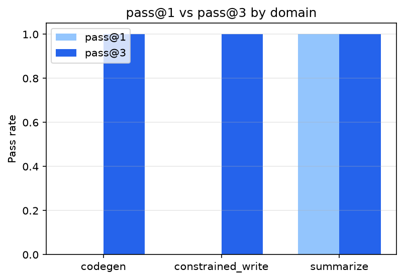
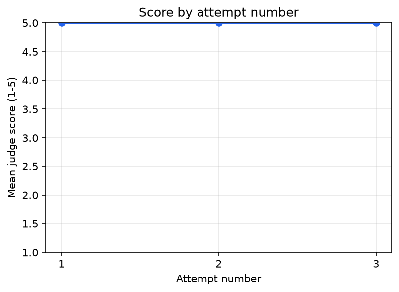
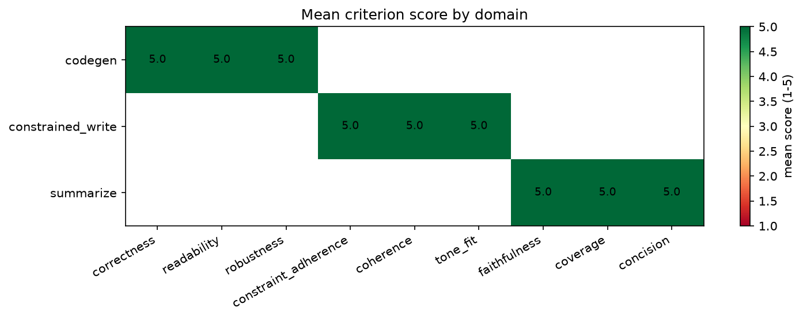
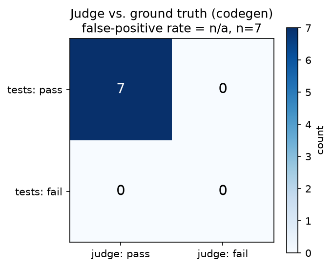

Project 10 · Self-Reflective Agent with Auto-Eval
Every output from this pipeline is scored by an LLM judge against a task-specific,
anchored rubric. Outputs that fail get regenerated under explicit, machine-usable
constraints compiled from a separate critic call — never by showing the model its
own bad draft. The generator, judge, and critic all run on the same local
qwen3.5:9b, which creates an obvious same-model-judge problem. This README
doesn't wave that away: it shows the three mitigations used (blind judging, anchored
rubrics, temperature 0) and then reports a measured confusion matrix of judge verdicts
against real test execution, including the judge's false-positive rate.
"Add a self-critique step" is a one-line prompt change. Whether it actually helps is an
empirical question almost nobody answers empirically — teams ship "the agent checks
its own work now" as a bullet point and move on. This project treats that claim as
something to measure: every attempt's rubric scores, hard-check results, and outcome are
written to a SQLite store, and reflect report reads pass@1 vs. pass@3 and
score-by-attempt off that table. If regeneration isn't actually improving anything, the
chart says so.
The harder problem is that the judge doing the scoring is the same 9B model that did the writing. A same-model judge has no ground truth of its own to fall back on and every incentive (in the statistical sense of what a next-token predictor has learned to do) to rate visible effort rather than actual quality. Section 4 below is about taking that seriously instead of ignoring it.
Task + rubric
│
▼
Generator (attempt k) ──▶ Candidate output
│
▼
Hard checks (deterministic: word count, must-include strings;
code tasks: actually run the tests, sandboxed)
│
├─ fail ──────────────────────────────┐
│ ▼
pass Constraint compiler
│ ▲
▼ │
LLM judge (blind: no attempt number, │
no history, anchored 1-5 rubric, │
temperature 0) │
│ │
├─ pass ──▶ Accept, log scores │
│ │
└─ fail ──▶ Critic (sees output + │
judge scores, diagnoses │
WHY, writes constraints) ─┘
│
k < max_attempts (3)?
yes │ │ no
▼ ▼
Generator Return best attempt,
(attempt flagged below threshold
k+1)
Every score, every cycle → SQLite metrics store → charts
| Module | Responsibility |
|---|---|
tasks.py | Task + rubric + hard-constraint schema; loads rubrics from rubrics/*.yaml and task instances from bench/inputs/*.yaml through one shared loader. |
generator.py | Produces a candidate. Attempt k>1 receives compiled constraints from the prior failure — never the raw failed output. |
hard_checks.py | Deterministic validators (word counts, required/forbidden strings); for codegen, extracts the code and runs it in the sandbox against real tests. |
sandbox.py | Subprocess code runner: per-test-case isolation, timeout, network disabled inside the child. |
judge.py | Blind rubric scoring: task + rubric + output only, JSON scores with a justification per criterion, temperature 0. |
critic.py | Separate call: sees the judge's scores and diagnoses why, emits machine-usable Constraint[]. |
constraints.py | Compiles hard-check failures (no LLM needed) and critic output into a deduped constraint list. |
metrics.py | SQLite store for every attempt; pass@k, score-by-attempt, criterion heatmap queries and charts. |
calibrate.py | Judge-vs-tests confusion matrix on codegen; generic percent-agreement / Cohen's kappa helper. |
pipeline.py | Ties the above into the actual generate→judge→critique→regenerate loop. Not in the original file listing — factored out to avoid duplicating the loop between the CLI and the bench runner. |
cli.py | reflect run, reflect bench, reflect report, reflect calibrate. |
The generator and judge share a model, so the self-bias problem is real, not theoretical. Three mitigations, all implemented, all with a specific failure mode they target:
judge.py is called with the task, the rubric,
and the candidate output — nothing else. No attempt number, no prior critique, no
"this is a retry." If the judge could see it was scoring its own second attempt after
being told what was wrong, a same-model judge has every incentive to reward visible
effort over actual quality. It never gets that context.
None of that makes the judge unbiased. What makes the claim honest is
calibrate.py: on codegen tasks, the sandbox already has ground truth (the
tests actually ran) before the judge is ever asked to opine. Calibration forces a judge
call on every sampled attempt regardless of whether the tests passed, so "did the judge
say pass" and "did the tests actually pass" exist on the same output and can be
cross-tabulated. See the confusion matrix in Section 6 — it is the actual measured
answer to "how much should I trust this judge," not an assertion.
A word-count violation or a missing required phrase doesn't need an LLM to diagnose. A
candidate that fails a hard check never reaches the judge at all — the failing
CheckDetail is compiled directly into a constraint by
constraints.py, with zero LLM calls spent. For codegen specifically, "hard
check" means the code is extracted and actually executed in sandbox.py
against real test cases, in a subprocess with a timeout and network access disabled. If
the code doesn't run, or a test fails, that's ground truth no judge opinion can override
— and it's also exactly the signal calibration compares the judge against.
cd 10-self-reflective-auto-eval
uv sync
# one task, watch every attempt/critique/constraint
uv run reflect run --task constrained_write --show-cycles
# summarize an arbitrary file
uv run reflect run --task summarize_paper --input some_document.txt
# list all 30 bench task ids
uv run reflect bench --list
# a quick multi-task smoke run (NOT the full 30 -- see the note below)
uv run reflect bench --domain codegen --limit 3
# charts + pass@k table from whatever's in the metrics store so far
uv run reflect report
# judge-vs-tests calibration on a codegen subset (config-driven count, default 8)
uv run reflect calibrate --n 8
# tests: fast, zero-network unit/mocked suite (default)
uv run pytest
# live tests against the real model (slow, needs Ollama + qwen3.5:9b)
uv run pytest -m integration
Running the entire 30-instance bench live (uv run reflect bench with no
filters, or bench/run_bench.py) is supported and documented but was
not run in full for this README — it shares a local Ollama instance
with several other concurrent builders, and at up to 3 attempts × 3 LLM calls per
instance, 30 instances is a genuinely long, load-sensitive run. What follows is what was
actually run live: one full cycle per domain, and an 8-instance codegen calibration
subset.
This is an actual live transcript from uv run reflect run --task constrained_write
--show-cycles against qwen3.5:9b, not a constructed example. The task:
a formal apology email, 60-90 words, that must mention "5 days," sincerity, and a refund.
"Dear Valued Client, We sincerely apologize for shipping your order five days past the expected date. This delay caused significant inconvenience… Please accept this discount code as a token of appreciation…"
85 words (in range) and "sincer" is present — but the model wrote
"five days" where the task required the literal phrase
"5 days," and offered a "discount code" instead of the required word
"refund." Both are real, specific misses, not fabricated ones. This never reaches the
judge: it fails two deterministic must_include checks, so
constraints_from_hard_checks() compiles them directly into constraints
with zero LLM calls spent:
- You must explicitly mention: "5 days".
- You must explicitly mention: "refund"."Dear Valued Customer, We sincerely apologize that your order shipped 5 days later than expected… we are processing a partial refund on the affected items immediately…"
Both phrases appear verbatim. Hard checks pass, the blind judge scores all three criteria (constraint_adherence, coherence, tone_fit) 5/5, and the run is accepted. The generator never saw its own attempt-1 draft — only the two constraints above — which is the actual design thesis, not a slogan: the model fixed the two named requirements without collaterally rewriting the parts that were already fine.
Same live-run discipline, task: "write a function that returns the average of a list of numbers... Handle edge cases sensibly" — deliberately vague about what an empty list should do, which is exactly the kind of edge case a fluent-looking first draft tends to miss or handle differently than the test suite expects.
def average(nums: list[float]) -> float:
if not nums:
raise ValueError("Cannot calculate mean of an empty sequence")
return sum(nums) / len(nums)
Reasonable-looking code — raising on empty input is a defensible API choice in the
abstract. It just isn't what this task's ground truth expects
(assert average([]) == 0.0), and the sandbox is the arbiter, not a judge's
opinion about whether raising was "reasonable." The failing test case's actual
exception is compiled straight into the next attempt's constraint:
Fix test case 1: it currently fails with ValueError: Cannot calculate mean of an empty sequence.def average(nums: list[float]) -> float:
if len(nums) == 0:
return 0.0
return sum(nums) / len(nums)All 4 sandboxed tests pass. Only now does the judge run at all — scoring correctness/readability/robustness on code that already has real ground truth behind it, not instead of it.
A second live codegen run needed three attempts (attempts 1 and 2 both stuck at
3/4 passing on a different task before attempt 3 cleared all tests) — the loop doesn't
assume one round of constraints always fixes everything, and max_attempts exists
for exactly that case.
reflect bench / bench/run_bench.py) is built, tested, and one
command away; it was not run live for this README for the reasons in "Install and run"
above.
| domain | pass@1 | pass@3 | lift | n (runs) |
|---|---|---|---|---|
| codegen | 0% | 100% | +100pp | 2 |
| constrained_write | 0% | 100% | +100pp | 2 |
| summarize | 100% | 100% | +0pp | 1 |

Every codegen and constrained_write run in this sample failed attempt 1 and passed by attempt 2 or 3 — regeneration did the job it exists to do, on real model output, every time it was tried live. The flip side, stated plainly: n=1-2 per domain means "0% pass@1" here is not a claim that qwen3.5:9b fails these task types most of the time, just that it did in this specific small sample.

This chart is flat at 5.0 across all three attempt numbers, and that flatness is itself a real finding worth explaining rather than a boring chart to skip past: in every one of these 5 live runs, every failure was caught by a deterministic hard check (a missing phrase, a failing test), so the judge only ever scored the attempt that had already cleared hard checks — and it scored that attempt 5/5 every single time. The judge's own before/after trajectory isn't what demonstrates improvement in this sample; the hard-check pass/fail transition is. That's the architecture working as designed (cheap deterministic gate catches what it can, judge tokens spent only on what's left), but it also means this particular small sample can't speak to whether the judge itself would show a rising-score trend on failures it actually had to grade — a fair question the criterion heatmap below and a larger bench run would need to answer.

8-instance codegen subset, uv run reflect calibrate --n 8, run live twice: the
first run crashed the entire batch when instance #3's judge call hit the (then-240s)
timeout — a real bug, not a hypothetical one, described in the limitations below. After
fixing per-instance error isolation and checkpointing, the rerun completed cleanly:
Instance codegen_07 failed with Ollama chat call timed out after 300.0s:
timed out — recorded in data/calibration_checkpoint.json and the
CLI output, not swallowed. That's the point of the fix: a calibration run that silently
returns 0/8 because one call timed out is worse than useless, it's misleading.

reflect calibrate --n N) supports it.
Two real bugs surfaced only once real model calls under real load entered the picture, and both are worth stating plainly rather than folding into a changelog no one reads:
summarize with an
uncaught httpx.ReadTimeout. Root cause: the Ollama python client lets that
exception propagate directly under load, and it is not a subclass of Python's
builtin TimeoutError — which is the only timeout type the original
code caught. Fixed by catching httpx.TimeoutException explicitly; a mocked
regression test reproduces the exact exception via monkeypatch so this
can't silently regress.
LLMError in an unguarded list
comprehension took down every result already gathered. Fixed with per-instance
try/except and a checkpoint file written after every instance, so 7/8 completing with
1 recorded failure is now the actual behavior, not 0/8 with a stack trace. A scripted
regression test asserts both the failure isolation and that the checkpoint file reflects
progress mid-run, not just at the end.
Both fixes shipped with tests that fail against the pre-fix code and pass against the fix — the standard this project holds its own claims to elsewhere.
calibrate.agreement_stats()
implements the generic percent-agreement / Cohen's kappa machinery for it, and it's
exercised by unit tests, but this build had no independent human rater available to
actually produce labels. Reporting fabricated or self-labeled-by-the-builder numbers as
"human agreement" would be exactly the kind of unearned confidence this project is
trying not to produce. The codegen judge-vs-tests confusion matrix is reported instead
because it needed no human and is real.
reflect bench and bench/run_bench.py support it and it's one
command away, but the numbers in this README come from a smaller, explicitly labeled
live run plus the mocked pipeline tests.